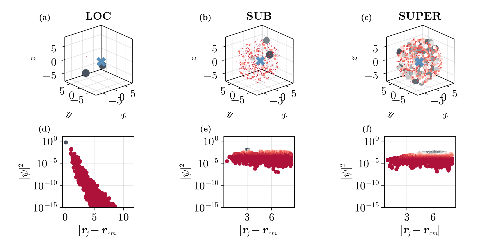

Localization
How to verify if a mode is localized or not is, at ultimate case, a visual inspection task. In 3D this task is particually challenging to understand and interpret. For instance, we could for instance scale the color of size of each marker accoriding to $|\Psi_j|^2$, which is shown in figures (a)-(c).
However, a better approach is to define the distance of the atoms from the mode's center of mass, using $|\Psi_j|^2$ as weights, the results are show in (d)-(f) .The function spatial_profile_single_mode provides that for you.
Verifying if a mode is localized or not is primarily a visual inspection task. In 3D, this task can be particularly challenging to understand and interpret. For example, we could scale the color or size of each marker according to $|\Psi_j|^2$, as shown in figures (a)-(c). A more clear visualization is to define the distance of the atoms from the mode’s center of mass, using $|\Psi_j|^2$ as weights. The results are shown in figures (d)-(f). The function spatial_profile_single_mode provides this for you.
Another approach is to check the Inverse Participation Ratio, IPR, which you can also access them via get_IPRs.

using CoupledDipoles, Random, FileIO, CairoMakie, ColorSchemes
N, ρk⁻³ = 2000, 1.0
Random.seed!(1135)
atoms = Atom(CoupledDipoles.Sphere(), sphere_inputs(N, ρk⁻³)...)
s, Δ = exp10(-5), 1.0
laser = Laser(PlaneWave3D(), s, Δ)
prob = LinearOptics(Scalar(), atoms, laser)
modes = classify_modes(prob) # this functions is likely to suffer changes on its classification algorithm
fig = with_theme(theme_latexfonts()) do
cmap = cgrad(colorschemes[:tableau_red_black_white], 15, categorical = true, rev=false)
xs, ys, zs = prob.atoms.r[1, :], prob.atoms.r[2, :], prob.atoms.r[3, :]
loc_idx = modes.loc[end-5]
sub_idx = modes.sub[4]
super_idx = modes.super[4]
fig = Figure(size = (900, 450), fontsize=20)
axs_3d = [Axis3(
fig[1,i],
xlabel = L"x",
ylabel = L"y",
zlabel = L"z",
aspect = (1,1,1)
) for i in 1:3]
axs_2d = [Axis(
fig[2,i],
xlabel = L"|\mathbf{r}_j - \mathbf{r}_{cm}|",
ylabel = L"|\psi|^2",
aspect = 1,
yscale=log10,
xticks = WilkinsonTicks(4),
) for i in 1:3]
for (ax_3d, ax_2d, figIdx, title) in zip(axs_3d, axs_2d, [loc_idx, sub_idx, super_idx], ["LOC","SUB","SUPER"])
ax_3d.title = title
x, y = spatial_profile_single_mode(prob, figIdx)
ynorm = (y .- minimum(y))./(maximum(y) - minimum(y)) # normalization between 0 and 1 for vizualization only
ψ²ₙ = CoupledDipoles.get_ψ²(prob, figIdx) # I could use `eigenvectors(prob)` to select the mode I want
r_cm = CoupledDipoles.coordinates_of_center_of_mass(prob.atoms.r, ψ²ₙ )
# (a) - (c)
scatter!(ax_3d, xs, ys, zs, markersize = 20ynorm, color = ynorm, transparency=true, colormap=cmap )
scatter!(ax_3d, [r_cm[1]], [r_cm[2]], [r_cm[3]], markersize = 25, color = "#5b8fbc", marker=:xcross)
# (d) - (f)
scatter!(ax_2d, x, y, markersize = 10, color = ynorm, transparency=false, colormap=cmap )
ylims!(ax_2d, 1e-15, 10)
end
for (label, layout) in zip(["(a)", "(b)", "(c)", "(d)", "(e)","(f)"], [fig[1,1], fig[1,2], fig[1,3], fig[2,1],fig[2,2],fig[2,3]])
Label(layout[1, 1, TopLeft()], label,
fontsize = 15,
font = :bold,
color=:black,
padding = (0, 5, 5, 0),
)
end
fig
end
FileIO.save("modesComparison.png", fig)CoupledDipoles.classify_modes — Functionclassify_modes(problem)Returns a tuple (loc, sub, super) with indices.
CoupledDipoles.spatial_profile_single_mode — Functionspatial_profile_single_mode(problem, mode_index::Integer)Returns DCM, ψ²ₙ, that is, the Distance of atoms to the center of mass, and the absolute value of the mode.
CoupledDipoles.get_IPRs — Functionget_IPRs(problem; forceComputation=false)Inverse Participation Ratio is computed with ∑Ψ⁴ / ( ∑Ψ² )² for each mode
CoupledDipoles.get_PRs — Functionget_PRs(problem; forceComputation=false)Participation Ratio is computed with ( ∑Ψ² )² / ∑Ψ⁴ for each mode